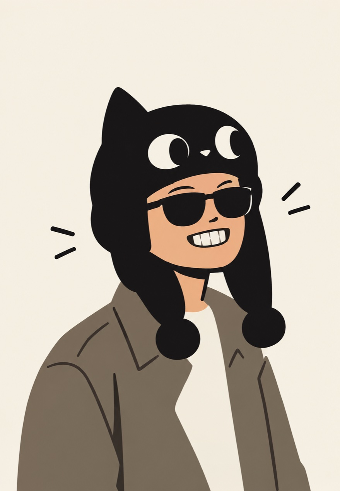
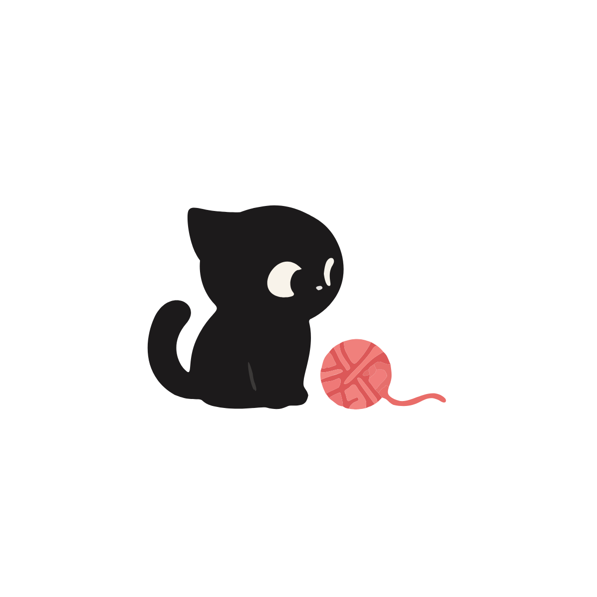
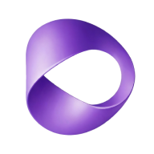
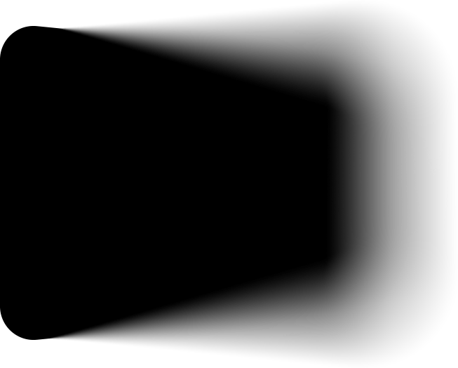

05 / Dani
Aku Dani. Desainer yang mager — sampai ada yang bikin kepo.
Aku main di desain visual, 3D, web, dan teknologi kreatif. Kadang bikin sesuatu yang berguna. Kadang mengotak-atik barang yang bukan punyaku. Kadang bikin sesuatu cuma buat tahu: bisa nggak, ya? AI ikut bantu ngerjain; arah dan keputusannya tetap dari aku.
Isi kotak perkakas
- Desain visual
- Desain UI
- Landing page
- Web app
- 3D modeling
- 3D animasi
- Eksperimental


✦ Soal AI
Iya, hampir semuanya dibikin pakai AI. Sengaja.
Ini eksperimennya: sejauh mana satu orang bisa bikin barang kalau AI yang megang perkakasnya. Ide, arah, desain, dan keputusannya tetap dari saya — AI yang ngerjain, saya yang milih mana yang jadi.
Playground saya
-
 Claude
Claude
-
 ChatGPT
ChatGPT
-
 DeepSeek
DeepSeek
-
 Gemini
Gemini
-

Dola -

Flow
Bagian saya — sebelum nyuruh AI
-
Nyari idenya.
Mau bikin apa, dan buat siapa.
-
Nentuin arahnya.
Rasanya, gayanya, dan batasannya.
-
Ngerancang desainnya.
Tata letak, warna, sampai kata-katanya.
-
Mutusin mana yang jadi.
AI ngasih banyak pilihan; yang milih tetap saya.
Riwayat / 5 tempat
Tempat saya pernah nggak mager.
Dari jepret video sampai ngurus sistem kantor. Urutannya nggak rapi — orangnya juga.
-
Berjalan
Creative Generalist
Freelance
-
Apr 2025 — Sekarang
Penata Kelola Sistem dan Teknologi Informasi
Sekretariat Daerah Kota Pekanbaru
-
Mar 2021 — Mar 2022
Graphic Designer
PT Tuan Dibangarna Indonesia
-
Jul 2020 — Feb 2021
Graphic Designer
PT Shifthink Digital Creative
-
Apr 2015 — Jun 2019
Videographer & Editor
Hijepret Studio
Nekonya lagi melek, nih.
Mau bikin apa?Barang baru, barang lama yang mau dibongkar, atau ide yang agak aneh — ceritain aja, nanti kita otak-atik bareng.